Objectives
Spacebook Application (Part 1)
Acquire a basic knowledge of class design by designing and implementing an application named Spacebook.
-
User: begin with a class named User containing personal identifier fields.
-
Create a Friendship class.
- The class shall contain User fields storing
- the source and
- target of the friendship relationship.
-
Use an interative approach to developing the application.
- Each iteration
- will be an application that compiles without syntax errors
- runs without generating logical errors
- builds on earlier iterations
spacebook_v0
In this lab we will develop an application called spacebook_v0.
The application will allow a user to
- Register personal information about itself such as
- Have list of friends
- Have a list of messages to and from frieds
We will begin with a naive design and refactor this so as to improve the design and implementation of the code.
Note that this class contains several really serious design errors, many of which will be discussed and rectified as we further develop the application.
- A User class will contain personal identifier fields
- First name
- Last name
- Email
- Password
- Array of friends
- Array of messages sent to friends
- Array of messages received from friends
Recall the recommended directory structure which is again illustrated in Figure 1.

Create a new directory called session07.
Create a new BlueJ project named spacebook_v0 in session07 (Figure 2).
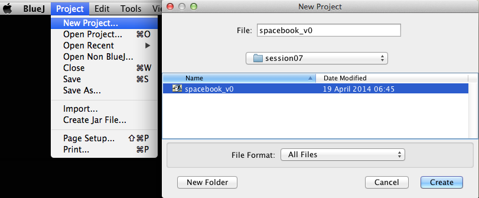
Create a new class named User in this project (Figure 3).
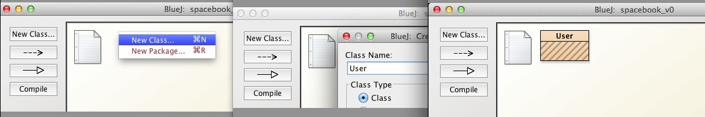
Notice the rectangle representing User is hatched: this means the class has not been compiled.
Open User source code in the BlueJ editor.
Replace all the code with an outer class wrapper:
public class User
{
}
Check this compiles without error.
spacebook_v0: (continued)
Because we are using arrays we now decide the maximum size of each.
- Let's use fixed values across all objects, that is, class variables.
- These fields are placed first in the list of variables.
static final int MAX_NUMBER_FRIENDS = 100;
static final int MAX_NUMBER_MESSAGES = 100;
Add these to User class and compile.
It is also necessary to maintain a cumulative total of friends and messages added to date.
- We will introduce two instance variables to do so:
public int numberFriends = 0;
public int numberMessages = 0;
The following fields will serve to identify a user:
public String firstName;
public String lastName;
public String email;
public String password;
Now declare and initialize the arrays of friends and messages:
public String[] friends = new String[MAX_NUMBER_FRIENDS];
public String[] messages = new String[MAX_NUMBER_MESSAGES];
Here is the class User to date:
public class User
{
static final int MAX_NUMBER_FRIENDS = 100;
static final int MAX_NUMBER_MESSAGES = 100;
public int numberFriends = 0;
public int numberMessages = 0;
public String firstName;
public String lastName;
public String email;
public String password;
public String[] friends = new String[MAX_NUMBER_FRIENDS];
public String[] messages = new String[MAX_NUMBER_MESSAGES];
}
Check this code compiles.
Notice that we have not written a default constructor.
- In this situation, Java will provide a default constructor.
- Remember that a default constructor is simply a constructor without parameters. See here for further information.
Our next decision is how to assign values to the fields (initialization).
- This can be achieved with an overloaded constructor as follows:
public User(String firstName, String lastName, String email, String password)
{
this.firstName = firstName;
this.lastName = lastName;
this.email = email;
this.password = password;
}
Add this constructor to User.
Compile User and verify no errors.
Note the style adopted whereby we use the same name both as an actual parameter and as an instance variable.
- Observe also the use of the this keyword. We have already encountered this style in a lecture.
- The Oracle documentation that discusses this style is available here.
- Where we use the same name as both actual parameter and instance variable, such as here, we must distinguish between the local variable (the actual parameter) and the instance variable. Were we, for example, to code as shown in Figure 4 the local variable firstName would simply be assigned to itself and the instance variable firstName would remain unchanged.
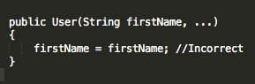
Clearly, in an industrial-grade application, a password would not be transitted as a clear-text parameter as we have done above. This would be highly insecure.
Take care with indentation.
- The recommended indentation is 4 spaces. See Figure 5 and Figure 6.
- It should be noted, however, that some developers use 2 spaces, notwithstanding the code convention recommendation on this point
- See here for an interesting stackoverflow discussion.
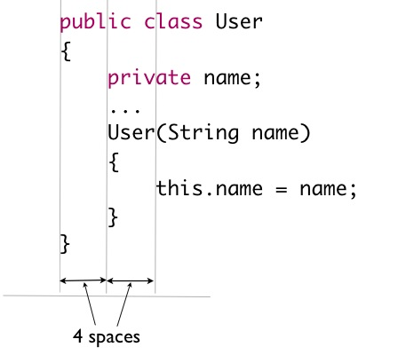
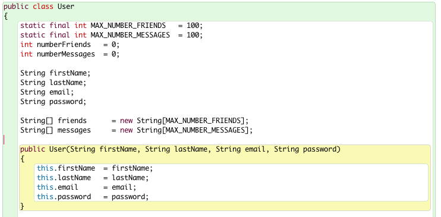
Next we add a method to create a new friend:
public void befriend(String name)
{
friends[numberFriends] = new String(name);
numberFriends += 1;
}
Corresponding to this last method is one to remove a friend:
public void unfriend(String name)
{
for (int i = 0; i < friends.length; i += 1)
{
String currentFriend = friends[i];
if (currentFriend != null && currentFriend.equals(name))
{
friends[i] = null;
numberFriends -= 1;
}
}
}
Then we include a method to add a message:
public void addMessage(String message)
{
messages[numberMessages] = new String(message);
numberMessages += 1;
}
And finally we add methods to display messages and friends.
public void displayFriends()
{
for (int i = 0; i < numberFriends; i += 1)
{
System.out.println(friends[i]);
}
}
public void displayMessages()
{
for (int i = 0; i < numberMessages; i += 1)
{
System.out.println(messages[i]);
}
}
Add all of the above to the User class and check it compiles.
spacebook_v0: (continued)
We shall now conduct some basic tests and then review the class we have written.
Here is the completed class User at the end of the last step:
public class User
{
static final int MAX_NUMBER_FRIENDS = 100;
static final int MAX_NUMBER_MESSAGES = 100;
public int numberFriends = 0;
int numberMessages = 0;
public String firstName;
public String lastName;
public String email;
public String password;
public String[] friends = new String[MAX_NUMBER_FRIENDS];
public String[] messages = new String[MAX_NUMBER_MESSAGES];
public User(String firstName, String lastName, String email, String password)
{
this.firstName = firstName;
this.lastName = lastName;
this.email = email;
this.password = password;
}
public void befriend(String name)
{
friends[numberFriends] = new String(name);
numberFriends += 1;
}
public void unfriend(String name)
{
for (int i = 0; i < friends.length; i += 1)
{
String currentFriend = friends[i];
if (currentFriend != null && currentFriend.equals(name))
{
friends[i] = null;
numberFriends -= 1;
}
}
}
public void addMessage(String message)
{
messages[numberMessages] = new String(message);
numberMessages += 1;
}
public void displayFriends()
{
for (int i = 0; i < numberFriends; i += 1)
{
System.out.println(friends[i]);
}
}
public void displayMessages()
{
for (int i = 0; i < numberMessages; i += 1)
{
System.out.println(messages[i]);
}
}
}
Before testing the class you are recommended to review the material in the earlier lab, BlueJ Debug & Unit Test.
Ensure you tick the Show unit testing tools checkbox accessible in BlueJ | Preferences | Interface (See Figure 1).
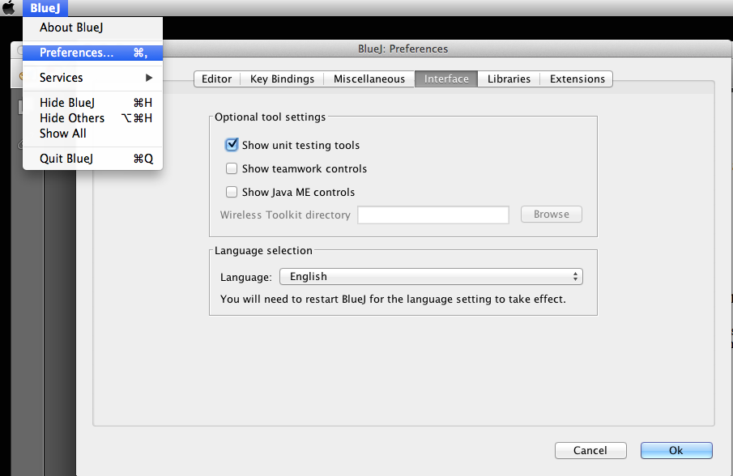
When you have completed the review and enabled the testing tools display, proceed as follows:
- Invoke Create Test Class on the User class rectangle in BlueJ spacebook window.
- A JUnit class named UserTest is created.
- Open this in the BlueJ editor and replace the default code with the following:
import static org.junit.Assert.*;
import org.junit.After;
import org.junit.Before;
import org.junit.Test;
public class UserTest
{
private User homer;
@Before
public void setUp()
{
homer = new User("Homer", "Simpson", "homer@simpson.com", "secret");
}
@Test
public void testFriends()
{
homer.befriend("barney");
homer.befriend("bart");
homer.befriend("maggie");
homer.befriend("marge");
assertEquals(homer.numberFriends, 4);
homer.unfriend("barney");
assertEquals(homer.numberFriends, 3);
}
@Test
public void testMessages()
{
//add code here during lab
}
}
Observe what this UserTest class behaviour is:
- In setUp a new User object is created.
- In the method testFriends
- Homer makes four friends
- User homer is then checked that it has the correct number of friends.
- Then a friend is removed.
- Another check is carried out to verify the number of friends counter has been decremented.
- Observe that User homer access the variable numberFriends directly without using a getter:
- This is permissible because, as previously discussed, no access modifier has been applied to numberFriends and it is thus directly accessible to objects of classes that resided in the same package as User.
- In the method testMessages which you should write during this lab:
- Homer generates four messages
- User homer is then checked that it has the correct number of messages
Conduct a unit test as follows:
- Right click on the UserTest class diagram (the dark green rectangle in the BlueJ spacebook_v0 window).
- Invoke TestAll()
- The BlueJ: Test Results window should appear:
- The two test methods executed, namely testFriends and testMessages should contain tick marks indicating a successful test run.
- A green progress bar indicates overall success, that is, all the individual tests succeeded.
- See Figure 2
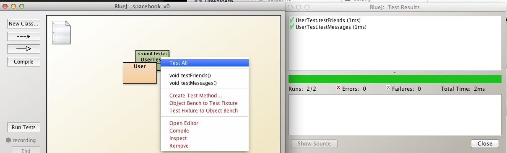
spacebook_v0: (continued)
Now we shall discuss briefly the class' shortcomings and then in subsequent refactorings, attempt to improve the design.
Review the accompanying lecture slides in particular the topics cohesion and coupling.
Here are some obvious flaws in this class' design:
Low cohesion
- This class has low cohesion
- It is responsible for several tasks.
- User details
- Messages
- Friendships
- We will address this shortcoming by creating new classes for friendships and messages.
Tight coupling
- The class has tight coupling because
- The instance variables are public
- Other classes both within the package and from outside the package can directly access these variables
- Thus any changes to any of these variables could have a ripple effect across other objects
- This would increase the risk of errors and make the code more difficult to maintain
- We shall address ths shortcoming by
- omitting all public access modifier on instance variables
- by omitting modifiers we are allowing direct access to these variables only from within the package. This further discussed in the next step.
Using fixed-fixed length arrays
- The class uses fixed arrays and sets unrealistic maximum array sizes
- Fixed arrays have several disadvantages
- Difficult to know when code written future suitable array size
- Difficult to manipulate, e.g., remove elements.
- We shall replace the fixed arrays with ArrayList type variables
- These have the advantage that their sizes can be varied at runtime
- A robust and well-tested library supports ArrayList
Other design weaknessess
- Messages are not segregated into message source and message target.
- Friends: better to have a record of the pair of individuals comprising a friendship.
spacebook_v1: User class
Open spacebook_v0 project and save as spacebook_v1 in session07 folder (package).
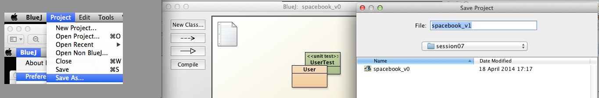
Open User source code in the BlueJ editor.
Replace all the existing code with the following:
public class User
{
String firstName;
String lastName;
String email;
String password;
public User(String firstName, String lastName, String email, String password)
{
this.firstName = firstName;
this.lastName = lastName;
this.email = email;
this.password = password;
}
public void befriend()
{
}
public void unfriend(String name)
{
}
}
Compile User and verify no errors.
Note that we have omitted the public access modifier preceeding instance variables.
Although, to date, as a general policy we have been applying the private access modifier, we are now, in this session's labs, omitting the access modifier.
-
The reason is, primarily, to align our code-writing practices to those that will apply later in the course when this module will form the basis for further work.
-
Recall that the omission of a modifier means access to members of the class is permitted from both within the class and from within the package containing the class but not from elsewhere.
-
Thus omitting the access modifier is less restrictive than using private but more restrictive than using public in which case access would be available to the world.
-
Adopting this access modifier policy will prove convenient during testing by dispensing with any need for accessors (getters) or mutators (setters), provided of course, that the test classes are located within the same package as the class being tested.
-
You may wish to review the rules relating to access permissions by revisiting Controlling Access to Members of a Class, summarised in the table in Figure 2.
- 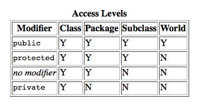
This is as far as we will proceed with refactoring User until we have created a Friendship class.
spacebook_v1: Friendship class
We shall now develop a class to manage friendships.
Create a new class named Friendship in the spacebook_v1 project.
Open Friendship in the BlueJ editor and remove all code except the outer class wrapper:
public class Friendship
{
}
Compile to verify no errors.
The purpose of the Friendship class is to contain
- a reference to the originator of the friendship
- a reference to the person being befriended
Here, then, are the fields to be added to the Friendship class:
User sourceUser;
User targetUser;
Add these fields to Friendship and check it compiles.
-
It only remains to initialize the fields and as with User, we shall use the constructor.
-
This means that when the Friendship object is being created, all the field data must be known: sourceUser and targetUser attributes.
Here is the constructor code:
public Friendship(User sourceUser, User targetUser)
{
this.sourceUser = sourceUser;
this.targetUser = targetUser;
}
Compile to verify no syntax errors.
Observe in Figure 1, the dashed line between Friendship and User, terminating with an arrow at User.
This indicates that Friendship uses (or has) User as a field type.
The diagonal double line at the lower right-hand corner of Friendship (also in Figure 1) simply indicates that Friendship has been selected (is in focus).
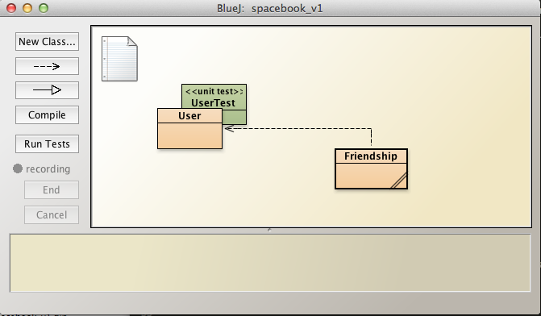
spacebook_v1: User has Friendship
To date we have created a User class and a Friendship class.
We shall now
- Add a Friendship field to User
- Write methods to
- establish a friendship
- end the friendship
In this iteration a User may have only one friend.
In a later iteration we shall allow a user to have many friends.
Open the User source code in the BlueJ editor and add a Friendship field to the User class:
Friendship friendships;
Check your code compiles.
Modify the method befriend as follows by adding a parameter and a single line for the body:
public void befriend(User friend)
{
friendships = new Friendship(this, friend);
}
This method
- Passes as a parameter a reference to the user to be befriended
- Creates a new Friendship object using the Friendship class' overloaded constructor
- Check the Friendship code and study its constructor signature
- First parameter is the User object initiating the friendship
- this is a reference to the friendship initiator
- the actual parameter friend is the second Friendship constructor argument.
Here is the refactored method to end the friendship:
public void unfriend(User friend)
{
friendships = null;
}
We simply pass a reference to the User instance, the friend, and set this to null;
For the purpose of testing we shall now write a method to display the friend:
public void displayFriends()
{
if(friendships != null)
{
System.out.println("My friend is "+friendships.targetUser.firstName;
}
else
{
System.out.println("Unfortunately you have no friends");
}
}
The method
- Checks if a Friendship object exists (friendships)
- If so, the program prints the friend's name
- Otherwise it prints a message indicating no friends exist
Here is the complete code for both User and Friendship:
public class User
{
String firstName;
String lastName;
String email;
String password;
Friendship friendships;
public User(String firstName, String lastName, String email, String password)
{
this.firstName = firstName;
this.lastName = lastName;
this.email = email;
this.password = password;
}
public void befriend(User friend)
{
friendships = new Friendship(this, friend);
}
public void unfriend()
{
friendships = null;
}
public void displayFriends()
{
if(friendships != null)
{
System.out.println("My friend is " + friendships.targetUser.firstName);
}
else
{
System.out.println("Unfortunately you have no friends");
}
}
}
public class Friendship
{
User sourceUser;
User targetUser;
public Friendship(User sourceUser, User targetUser)
{
this.sourceUser = sourceUser;
this.targetUser = targetUser;
}
}
Observe the expression friendships.targetUser.firstName in the method public void displayFriends:
- Were the variables targetUser (in Friendship) and firstName (in User) private variables then direct access as here would not be permitted.
- Getters (accessors) would be required, for example:
- In User: getFirstName
- In Friendship: getTargetUser
- The expression friendships.targetUser.firstName would then be replaced by:
- friendships.getTargetUser().getFirstName().
In the next step we shall perform some basic tests to exercise these classes and their methods.
spacebook_v1: Manual Testing
Create two User instances by selecting User class and invoking the User constructor:
- Homer Simpson
- Barney Gumble
See Figure 1 and Figure 2.
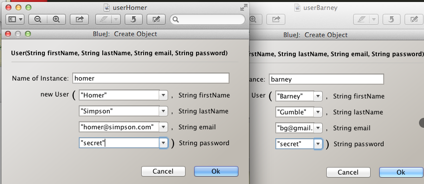
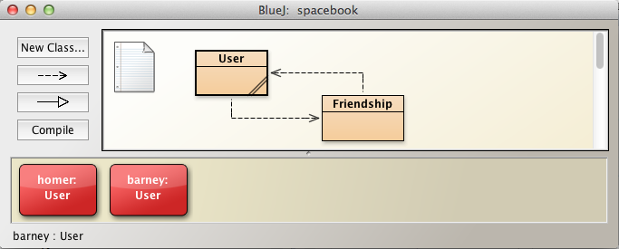
Select homer instance on object bench, right click and invoke displayFriends. As you will see in Figure 3 there are no friends because Homer has not created a friendship.
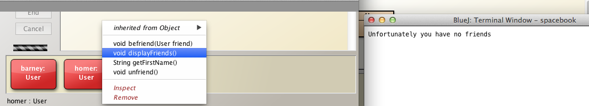
Remedy this by selecting Homer, right clicking and invoking befriend (Figure 4).
Enter the name of the other User instance on the object bench, namely, barney.
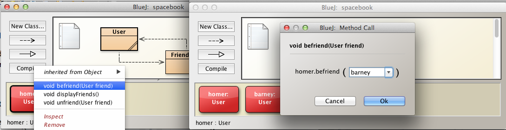
Select Homer again and invoke displayFriends.
As illustrated in Figure 5, the friend Homer has just created should be displayed.
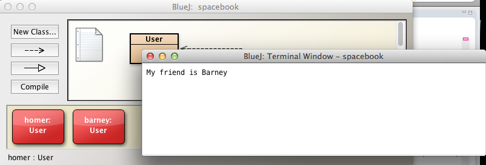
Now check if Barney has any friends. Does he?
Add Homer as a friend to Barney.
Perform these tests:
- Invoke displayFriends on Homer
- Barney should be displayed as a friend
- Invoke displayFriends on Barney
- Homer should be displayed as a friend
Exercises
Exercise 1
This task relates to iteration spacebook_v0.
In summary, this task requires that you
- Replace the single messages array with arrays representing a message inbox and a message outbox
- Replace the method that displays messages with
- Method to display the contents of inbox
- Method to display the contents of outbox
- Implement a method to send a message to another user
- public void sendMessage(User to, String messageText)
- Perform some basic tests.
Here is the task description in greater detail:
Refactor the User class as follows:
- Remove field int numberMessages
- Replace with
- int numberMsgsInbox = 0;
- int numberMsgsOutbox = 0;
- Remove String[] messages
- Replace with
- String[] inbox representing messages received
- String[] outbox representing messages sent
- Remove method addMessage
- Replace with
- public void sendMessage(User to, String messageText)
- add message to outbox of sender.
- add message to inbox of recipient (target user).
- Remove method displayMessages
- Repace with
- displayInbox, a method to display messages received
- *displayOutbox, a method to display messages sent
- Test the refactored User class as follows:
- Instantiate User marge on object bench.
- Instantiate User homer on object bench.
- Marge sends message to Homer
- Invoke displayOutbox on User marge to verify message sent.
- Invoke displayInbox on User homer to verify message received.
- Homer sends message to Marge
- Invoke displayOutbox on User homer to verify message sent.
- Invoke displayInbox on User marge to verify message received.
Here is the skeleton of the refactored class:
public class User
{
static final int MAX_NUMBER_FRIENDS = 100;
static final int MAX_NUMBER_MESSAGES = 100;
int numberFriends = 0;
int numberMsgsInbox = 0;
int numberMsgsOutbox= 0;
String firstName;
String lastName;
String email;
String password;
String[] friends = new String[MAX_NUMBER_FRIENDS];
String[] outbox ...
String[] inbox ...
public User(String firstName, String lastName, String email, String password)
{
this.firstName = firstName;
this.lastName = lastName;
this.email = email;
this.password = password;
}
public void befriend(String name)
{
friends[numberFriends] = new String(name);
numberFriends += 1;
}
public void unfriend(String name)
{
for (int i = 0; i < friends.length; i += 1)
{
String currentFriend = friends[i];
if (currentFriend != null && currentFriend.equals(name))
{
friends[i] = null;
numberFriends -= 1;
}
}
}
public void sendMessage(User to, String messageText)
{
}
public void displayOutbox()
{
}
public void displayInbox()
{
}
public void displayFriends()
{
for (int i = 0; i < numberFriends; i += 1)
{
System.out.println(friends[i]);
}
}
}